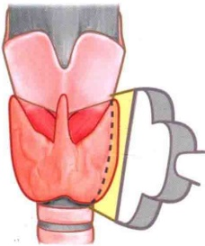
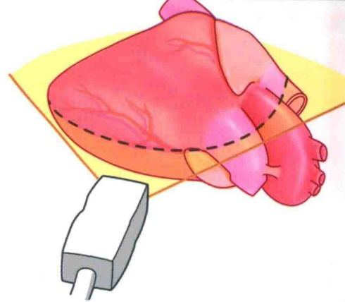

Ultrasound scanning series
超声扫查
系列丛书
超声人的必读经典。把解剖、探头移动、标准切面与疾病声像图放回同一条学习路径。

01 / DIAGNOSIS
超声疾病诊断及扫查技巧图解
以疾病为线索，串起典型声像图与扫查思路。
进入在线阅读
02 / ANATOMY
超声解剖及扫查技巧图解
从断层解剖出发，理解探头移动与标准切面。
进入在线阅读Ultrasound scanning series
超声人的必读经典。把解剖、探头移动、标准切面与疾病声像图放回同一条学习路径。

以疾病为线索，串起典型声像图与扫查思路。
进入在线阅读
从断层解剖出发，理解探头移动与标准切面。
进入在线阅读